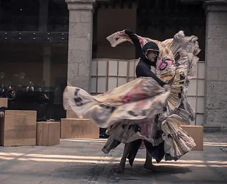
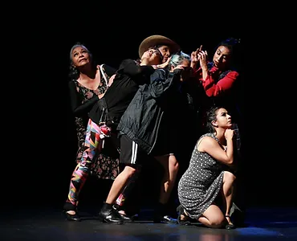
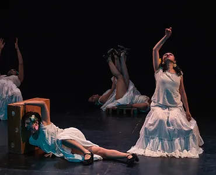
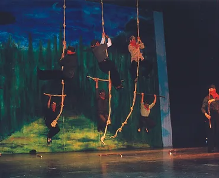
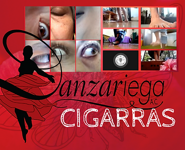
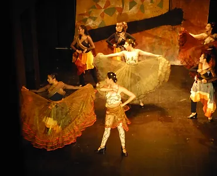

Repertorio
¿Puede la danza folklórica hablar del México contemporáneo?
En Danzariega trabajamos convencidas de la enorme riqueza y posibilidades creativas de la danza
folklórica como fenómeno colectivo de cohesión social; como contadora de relatos acerca de quienes somos
lxs distintxs mexicanxs desde una dimensión histórica; y también, de manera sustancial, como un lenguaje
del cuerpo que puede comunicar.
Con la danza folklórica mexicana como punto de partida y herramienta fundamental, asumimos una búsqueda
permanente por transitar caminos propios que permitan dar rienda suelta a la creatividad, dialogando
nuestros saberes con otras técnicas corporales, estéticas de la escena, tecnologías teatrales,
propuestas musicales, y lo que se acumule, para abordar temáticas sociales de nuestro sentipensar
cotidiano.

Impulso de/re velado
La máquina funciona tac tac tac, la hemos escuchado desde niñxs tac tac tac nos hemos tac habituado tac a su sonar tac, ya ni siquiera la notamos tac tac tac, ahí está y nosotros somos parte de ella...
Es a través del jugueteo con el zapateado, el faldeo, que impulso de/re velado nos invita a mirar y ser mirados como piezas dentro de una estructura sistémica caótica, desestructurante, deshumanizante, en constante movimiento.

El fluir del laberinto
Collage de historias citadinas en las que la miseria, el amor trágico, la vorágine impersonal, el abuso, la complicidad y la ternura convergen en las calles de la inmensa Ciudad de México.

Pero ésta... es una voz en marcha
A través del zapateado, la música jarocha en diálogo con la música experimental, el teatro y algunas pinceladas de danza africana, nos asomamos al mundo colectivo de estas mujeres cuya voz guerrera, a pesar de la pérdida, la ausencia, la tristeza, la rabia o el dolor, no detiene su andar. Porque su voz, nuestra voz... es una voz en marcha.

Se está juntando el agua en los arroyos...
¡Ya Basta! fue el grito que desde la selva chiapaneca hizo retumbar la "entrada de México al primer mundo" el 1º de enero de 1994. Con historia zapateada, Danzariega nos acerca a hombres, mujeres y niños, a la vida cotidiana que gestara aquel grito.

Cigarras
Obra virtual en vivo.
Tras siete semanas de encierro por la contingencia sanitaria derivada del virus SarsCov2, las danzariegas nos dimos a la tarea de reflexionar juntas el impacto de este encierro en nuestras cuerpas. Pasar de estar encerradas en casa a estar encerradas en una pantalla.

Agravio
Reflexión en zapateado acerca de la comodidad que puede darnos el encierro y la mirada ciega hacia lxs otrxs, en contraste con la organización colectiva que posibilita transformar(nos). Este día, que es cada día, festejamos el impulso de libertad y justicia que desentume, despierta, agita nuestra existencia, que nos enlaza con otrxs y nos hace gritar. Elogiamos a aquel que en el presente sigue palpitando, el corazón insurgente.